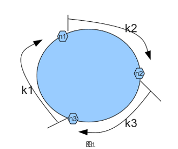
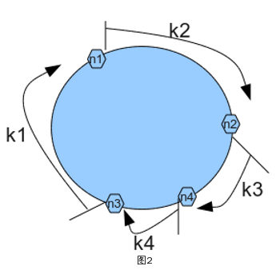
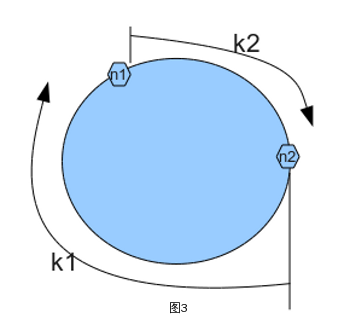
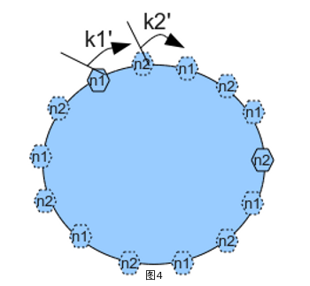
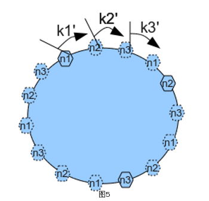
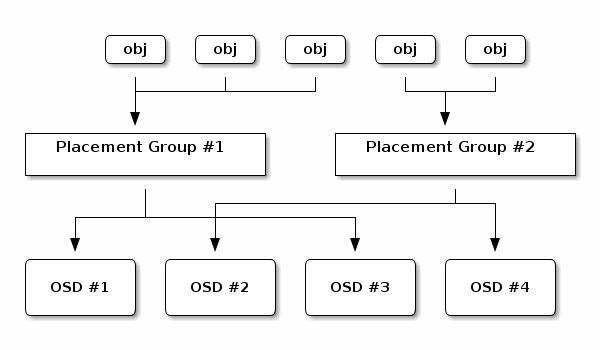
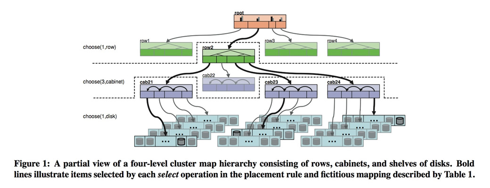
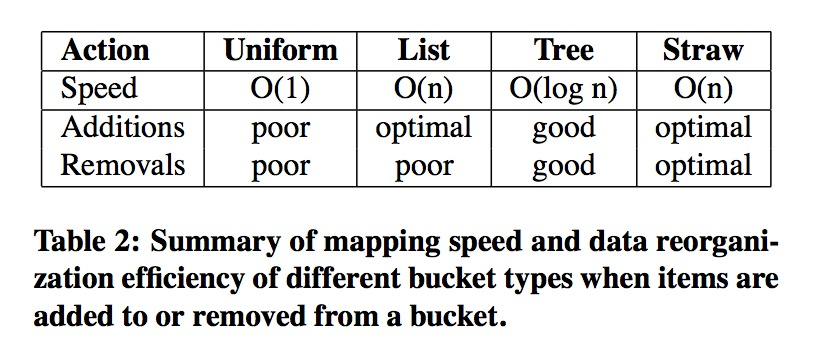

crush
介绍
在看ceph的时候，crush这部分算是刚接触ceph时最让人迷惑的地方吧。
- 为了负载均衡，数据需要均匀的进行分布
- 数据分布是动态的，要能够便于存储介质的添加删除
ceph使用了CRUSH，swift使用了consistent hashing，CRUSH类似consistent hashing，与之最大的区别在于接受的参数多了cluster map和placement rules，更加详细的考虑到了机架等存储层次。
consistent hashing
普通hash
N个节点、假设一个均匀的hash函数hash()，计算数据对象key的分布：
n = hash(key) mod N
但是当node增加或减少的时候，所有的数据对象都需要重新计算分布，大量的数据移动。
consistent hashing
普通consistent hashing
- 构造值为 0 - 2^32 的ring
- 计算node的hash，定位到ring
- 计算数据对象的hash，定位到ring
- 针对一个数据对象，顺时针查找第一个node即为所属node

在node较少的时候，增加或减少节点，有较大的数据移动，负载不均匀。


分布式consistent hashing
引入虚拟节点，其数量在部署的时候预估且不能改变。

当node增加或减少的时候，数据对象 –> vnode 的映射不会改变，只有 vnode –> node 映射改变，少量数据移动。

CRUSH
Controlled Replication Under Scalable Hashing

计算pgid：
1 | hash(object ID) mod PGs –> 58 |
pg映射osd：
1 | CRUSH(x) ‐> (osd n1, osd n2,osd n2) |
参数
- x pgid
- cluster map
- placement rule
输出一组osd
cluster map
描述存储设备的逻辑分布。在cluster map中有2个概念，
- bucket 父节点，如机架、host，可以用于隔离故障域；
- device 叶子节点，硬盘。
各自的权重与容量、吞吐量有关系。

不同的bucket type，有不同的选择算法，计算复杂度和osd删除添加的数据移动是不一样的。

- uniform
所有的item权重都是相同的，不考虑权重 - list
添加设备的时候，有最优的数据移动，适用集群拓展类型 - tree
- straw
考虑权重，有最优的数据移动
placement rule
the replica placement policy，放置策略，描述了选择设备的过程
eg
1 | rule replicated_ruleset { |
map example
获取集群的crush map信息
1
2ceph osd getcrushmap -o crush.map # 获取map，已编译
crushtool -d crush.map >> crush.txt # 反编译
cursh.txt 的内容
1
2
3
4
5
6
7
8
9
10
11
12
13
14
15
16
17
18
19
20
21
22
23
24
25
26
27
28
29
30
31
32
33
34
35
36
37
38
39
40
41
42
43
44
45
46
47
48
49
50
51
52
53
54
55
56
57
58
59
60
61
62
63
64
65
66
67
68
69# begin crush map
tunable choose_local_tries 0
tunable choose_local_fallback_tries 0
tunable choose_total_tries 50
tunable chooseleaf_descend_once 1
tunable straw_calc_version 1
# devices
device 0 osd.0
device 1 osd.1
device 2 osd.2
# types
type 0 osd
type 1 host
type 2 chassis
type 3 rack
type 4 row
type 5 pdu
type 6 pod
type 7 room
type 8 datacenter
type 9 region
type 10 root
# buckets
host ceph1 {
id -2 # do not change unnecessarily
# weight 0.093
alg straw
hash 0 # rjenkins1
item osd.0 weight 0.093
}
host ceph2 {
id -3 # do not change unnecessarily
# weight 0.093
alg straw
hash 0 # rjenkins1
item osd.1 weight 0.093
}
host ceph3 {
id -4 # do not change unnecessarily
# weight 0.093
alg straw
hash 0 # rjenkins1
item osd.2 weight 0.093
}
root default {
id -1 # do not change unnecessarily
# weight 0.279
alg straw
hash 0 # rjenkins1
item ceph1 weight 0.093
item ceph2 weight 0.093
item ceph3 weight 0.093
}
# rules
rule replicated_ruleset {
ruleset 0
type replicated
min_size 1
max_size 10
step take default
step chooseleaf firstn 0 type host
step emit
}
# end crush map
pool实现ssd作为primary
新添加的一个rule规则：
1
2
3
4
5
6
7
8
9
10
11
12
13
14
15
16
17
18
19
20
21
22
23
24
25
26
27host ceph1-ssd {
id -5 # do not change unnecessarily
# weight 0.093
alg straw
hash 0 # rjenkins1
item osd.3 weight 0.093
}
root ssd {
id -6 # do not change unnecessarily
# weight 0.093
alg straw
hash 0 # rjenkins1
item ceph1-ssd weight 0.093
}
rule ssd_primary {
ruleset 1
type replicated
min_size 1
max_size 10
step take ssd
step chooseleaf firstn 1 type host
step emit
step take default
step chooseleaf firstn -1 type host
step emit
}
创建一个rule 是 ssd_primary的pool，并上传一个对象
1
2
3
4
5
6
7# ceph osd crush rule ls
# ceph osd pool create test-ssd 8 8 replicated ssd_primary
# rados -p test-ssd put aaa aaa
# ceph osd map test-ssd aaa
osdmap e836 pool ‘test-ssd’ (132) object ‘aaa‘ -> pg 132.c6f58be5 (132.5) -> up ([3,2,1], p3) acting ([3,2,1], p3)
可以看出该pg的primary osd 是3，即新定义的ssd osd
源码
调试选择的过程
1
2
3
4ceph osd getmap -o osdmap
ceph osd lspools
gdb –args /home/ceph/src/osdmaptool –test-map-object aaa –pool 132 osdmap
b crush_do_rule1
2
3
4
5
6
7
8
9int crush_do_rule(const struct crush_map map,
int ruleno, int x, int result, int result_max,
const __u32 weight, int weight_max,
int scratch)
{
…
for (step = 0; step < rule->len; step++) {
case CRUSH_RULE_TAKE:
…
| category | name |
|---|---|
| Start | CRUSH_RULE_TAKE(1) |
| End | CRUSH_RULE_EMIT(4) |
| ChooseBucket | CRUSH_RULE_CHOOSE_FIRSTN(2) |
| ChooseBucket | CRUSH_RULE_CHOOSE_INDEP(3) |
| ChooseDevice | CRUSH_RULE_CHOOSELEAF_FIRSTN(6) |
| ChooseDevice | CRUSH_RULE_CHOOSELEAF_INDEP(7) |
| SetVariable | CRUSH_RULE_SET_CHOOSE_TRIES(8) |
| SetVariable | CRUSH_RULE_SET_CHOOSELEAF_TRIES(9) |
| SetVariable | CRUSH_RULE_SET_CHOOSE_LOCAL_TRIES(10) |
| SetVariable | CRUSH_RULE_SET_CHOOSE_LOCAL_FALLBACK_TRIES(11) |
| SetVariable | CRUSH_RULE_SET_CHOOSELEAF_VARY_R(12) |
在参数map 中crush_map
1 | struct crush_rule { |
1 | struct crush_rule_step { |
选择过程
1 | step take ssd |
对应的crush_rule_step依次是
1 | $19 = {op = 1, arg1 = -6, arg2 = 0} // -6 ssd id |